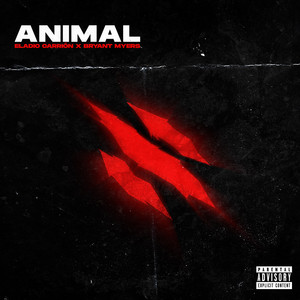

ELADIO X BRYANT MYERS

La colaboración entre Eladio Carrión y Bryant Myers nace dentro del movimiento del trap latino en Puerto Rico, donde muchos artistas comenzaron a colaborar entre sí para impulsar el género. Ambos raperos comparten un estilo fuerte de trap, con rimas directas y un flow característico que los hizo destacar en la escena urbana.
MEJOR TEMA

La canción Animal es una colaboración entre Bryant Myers y Eladio Carrión dentro del género del trap latino. El tema surge de la conexión entre ambos artistas en la escena urbana de Puerto Rico, donde muchos raperos colaboran para crear música y fortalecer el movimiento del trap.
El origen de la canción se basa en la idea de mostrar fuerza, actitud y confianza dentro de la música. En el tema, Bryant Myers y Eladio Carrión combinan sus estilos de rap para hablar sobre el éxito, la vida en la calle y el reconocimiento que han conseguido dentro del género urbano. La palabra “Animal” se usa como una metáfora para representar poder, determinación y dominio en la industria musical.
Animal